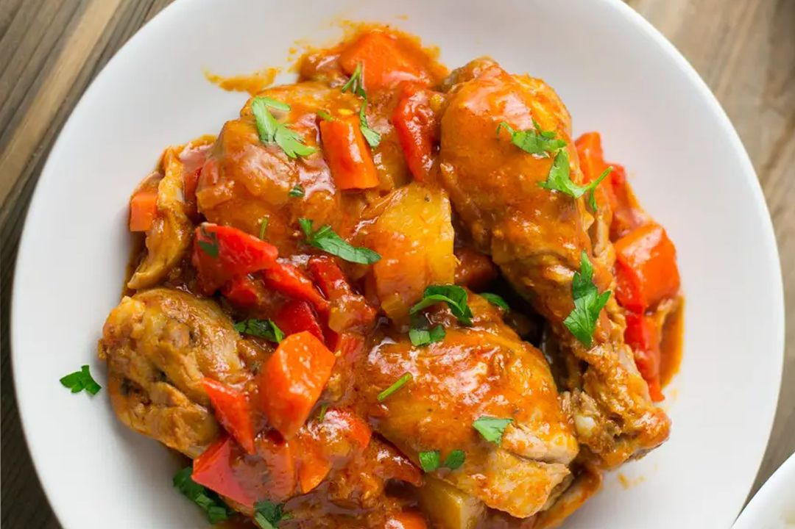

Loading...
Food Menu
Food Menu
Most Popular Items

Tapsilog $150
Marinated beef slices are often grilled or fried and served with garlic fried rice and a fried egg.Tosilog $120
Sweet and savory marinated pork slices, typically fried, served with garlic fried rice and a fried egg.Longsilog $130
Sweet or savory Filipino sausages, fried and served with garlic fried rice and a fried egg.Hotsilog $100
Fried hotdogs served with garlic fried rice and a fried egg.
Bangsilog $135
Fried or grilled milkfish, often marinated in vinegar and spices, served with garlic fried rice and a fried egg.Liemposilog $165
Grilled pork belly, often marinated, served with garlic fried rice and a fried egg.Spamsilog $105
Fried slices of Spam, served with garlic fried rice and a fried egg.Cornsilog $135
Sautéed corned beef, served with garlic fried rice and a fried egg.
Halo-Halo $65
A popular Filipino dessert consisting of a mix of shaved ice, sweetened fruits, beans, jelly, and sometimes topped with leche flan, ube halaya, or ice cream, and drizzled with evaporated milk.Turon $15
Slices of banana and sometimes jackfruit, wrapped in spring roll wrappers, coated in brown sugar, and fried until crispy. It's a sweet and crunchy snack often enjoyed as an afternoon treat.Taho $25
A sweet and comforting snack made from silken tofu, arnibal (sweet syrup made from caramelized sugar), and sago pearls. It's typically sold by street vendors in the morning but can also be enjoyed as a meryenda.Banana Cue $55
Deep-fried bananas coated in caramelized brown sugar, skewered on bamboo sticks. It's a sweet and satisfying snack popularly sold by street vendors.
Suman $75
Sticky rice cakes wrapped in banana leaves and steamed, usually served with sugar, grated coconut, or mango slices.Street Foods $95
Street food is ready-to-eat food or drink sold by a hawker, or vendor, in a street or other public place, such as at a market or fair. It is often sold from a portable food booth, food cart, or food truck and meant for immediate consumptionPuto $115
Steamed rice cakes made from rice flour, sugar, and baking powder, often served as a sweet or savory snack, sometimes paired with dinuguan (pork blood stew).Cheese Ice Cream $100
A Filipino twist on ice cream, often made with cheese flavors such as queso (cheese) or ube (purple yam), providing a unique blend of sweet and savory.Tinola $150
A chicken soup flavored with ginger, garlic, and fish sauce, and often featuring green papaya or chili leaves (malunggay).Pinakbet $115
A vegetable dish originating from the Ilocos region, made with mixed vegetables such as squash, eggplant, bitter melon, okra, and string beans, sautéed with shrimp paste (bagoong).Paksiw $150
A dish cooked in vinegar, garlic, and spices, often with pork (paksiw na baboy), fish (paksiw na isda), or even leftover lechon (paksiw na lechon).Laing $115
A Bicolano dish made with dried taro leaves cooked in coconut milk, ginger, garlic, and chili peppers.
Dinuguan $215
A savory stew made with pork offal and blood, flavored with vinegar, garlic, and chili peppers.
Bicol Express $225
A spicy dish from the Bicol region made with pork cooked in coconut milk, shrimp paste, and a generous amount of chili peppers.
